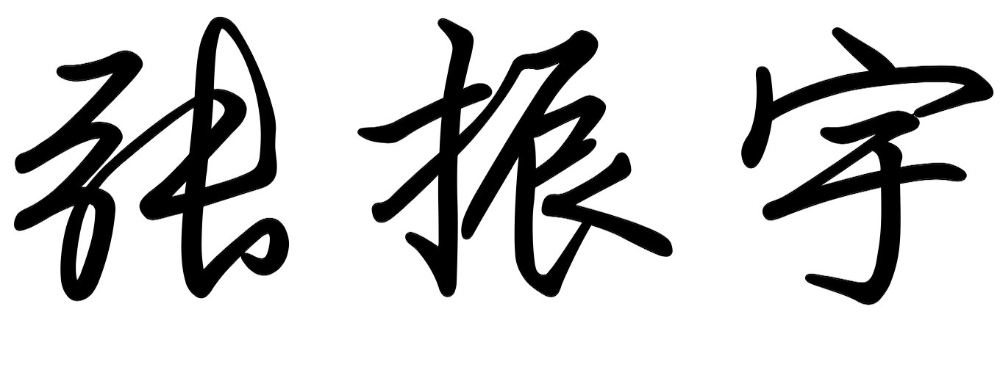

Zhenyu ZHANG / 
Senior Software Engineer (Research Scientist) at Baidu NLP
Baidu Technology Park, No.10 Yard, Xibeiwang East Road, Haidian District, Beijing.
zzysay[at]gmail/163.com

Biography
I am currently a Senior Software Engineer (Research Scientist) in the ERNIE Team at Baidu NLP. Prior to joining in Baidu, I received my Ph.D. degree from University of Chinese Academy of Sciences (UCAS) in 2022, under the supervision of Prof. Tingwen Liu and Prof. Li Guo. Before that, I received my B.S. degree from Central South University (CSU) in 2017, advised by Prof. Jianxin Wang.
My research interests broadly include Information Extraction, Text Mining and Natural Language Processing. Now, I am also committed to the frontier exploration and practical application of Large-Scale (Knowledge-Enhanced) Language Models.
I have published several papers in top-tier conferences such as ACL, EMNLP, AAAI, WWW, and won the Best Paper Award of PAKDD 2020.
News
- [2022/07] One paper about Document Intelligence (DI) was accepted to MM 2022.
- [2022/02] One paper about Language Model (LM) was accepted to ACL 2022.
- [2021/08] One paper about Named Entity Recognition (NER) was accepted to EMNLP 2021.
- [2021/06] One paper about Relation Extraction (RE) was accepted to ECML/PKDD 2021.
- [2021/05] One paper about Relation Extraction (RE) was accepted to ACL 2021.
- [2021/01] One paper about Information Extraction (IE) was accepted to WWW 2021.
- [2020/09] Two papers about Relation Extraction (RE) were accepted to COLING 2020.
- [2020/09] Two papers about Named Entity Recognition (NER), Event Extraction (EE) were accepted to EMNLP 2020.
- [2020/05] One paper about Relation Extraction (RE) was won the Best Paper Award of PAKDD 2020.
- [2020/01] One paper about Entity Linking (EL) was accepted to WWW 2020.
- [2019/11] One paper about Relation Extraction (RE) was accepted to AAAI 2020.
- [2019/05] One paper about Relation Extraction (RE) was accepted to IJCAI 2019.
- [2019/01] One paper about Entity Linking (EL) was accepted to WWW 2019.
Selected Publications ->
Layout-Aware Information Extraction for Document-Grounded Dialogue: Dataset, Method and Demonstration
Zhenyu Zhang, Bowen Yu, Haiyang Yu, Tingwen Liu, Cheng Fu, Jingyang Li, Chengguang Tang, Jian Sun
The 30th ACM International Conference on Multimedia (MM 2022)
From What to Why: Improving Relation Extraction with Rationale Graph
Zhenyu Zhang, Bowen Yu, Xiaobo Shu, Mengge Xue, Tingwen Liu, Li Guo
The 59th Annual Meeting of the Association for Computational Linguistics (ACL 2021, Findings)
Distilling Knowledge from Well-informed Soft Labels for Neural Relation Extraction
Zhenyu Zhang, Xiaobo Shu, Bowen Yu, Tingwen Liu, Jiapeng Zhao, Quangang Li, Li Guo
The 34th AAAI Conference on Artificial Intelligence (AAAI 2020)
NA-Aware Machine Reading Comprehension for Document-Level Relation Extraction
Zhenyu Zhang, Bowen Yu, Xiaobo Shu, Tingwen Liu
The 2021 European Conference on Machine Learning and Principles and Practice of Knowledge Discovery in Databases (ECML/PKDD 2021)
Document-Level Relation Extraction with Dual-Tier Heterogeneous Graph
Zhenyu Zhang, Bowen Yu, Xiaobo Shu, Tingwen Liu, Hengzhu Tang, Yubin Wang, Li Guo
The 28th International Conference on Computational Linguistics (COLING 2020)
Academic Services
- Program Committee Member: AAAI 2022/2021, IJCAI 2022, DialDoc@ACL 2022.
Selected Awards
- 2022. AIDU Talent Program. Baidu Inc..
- 2022. Beijing Outstanding Graduates. Beijing Municipal Education Commission.
- 2021. Best Paper Award Nominee. IEEE DSC.
- 2021. Pacemaker to Merit Student. University of Chinese Academy of Sciences (UCAS).
- 2020. National Scholarship for Doctoral Students. Ministry of Education, China.
- 2020. Best Paper Award. PAKDD.
- 2017. Hu'nan Outstanding Graduate. Hu'nan Provincial Education Commission.
- 2017. First Prize of the 3rd National College Competition on Cloud Computing. Ministry of Education, China.
- 2016. Cyber Security Scholarship. China Internet Development Foundation.
- 2016. National Scholarship for Undergraduate Students. Ministry of Education, China.
- 2015, 2016. Second Prize of the 8th/9th National College Student Information Security Contest. Ministry of Education, China.
- 2015. Second Prize of the 2nd National College Competition on Internet of Things. Ministry of Education, China.
Working Experiences
- 2022/07-Now: Senior Software Eigineer (Research Scientist) at NLP Department, Baidu Inc..
- 2021/02-2021/08: Research Intern at DAMO Academy, Alibaba Group.
- 2018/02-2018/06: NLP Intern at AI Lab, Xiaomi Inc..